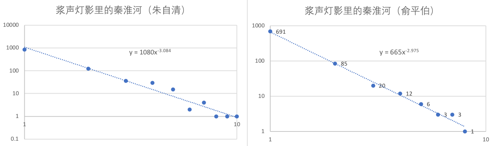
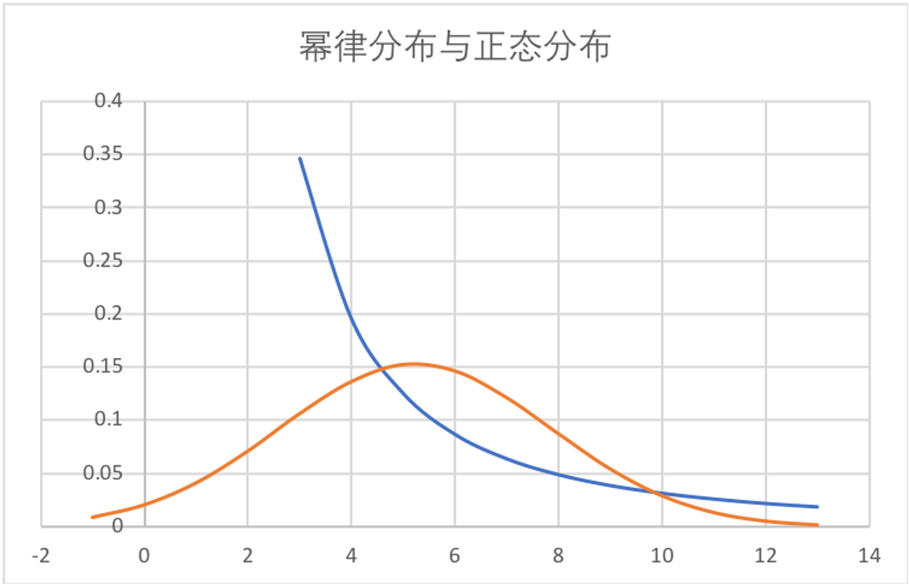
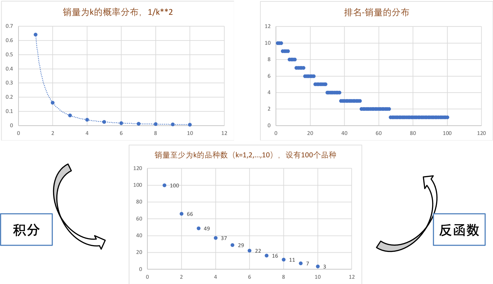
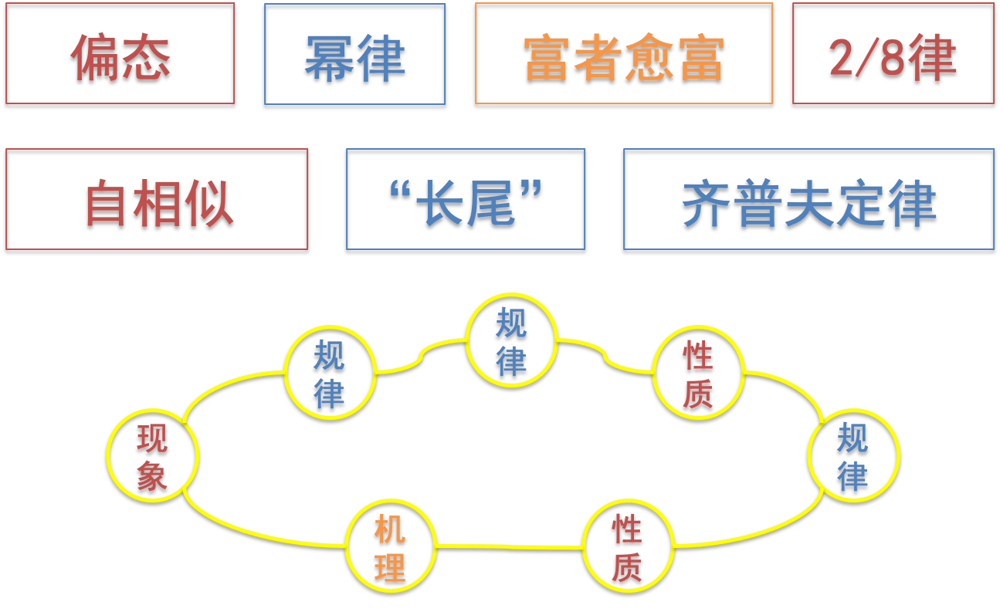
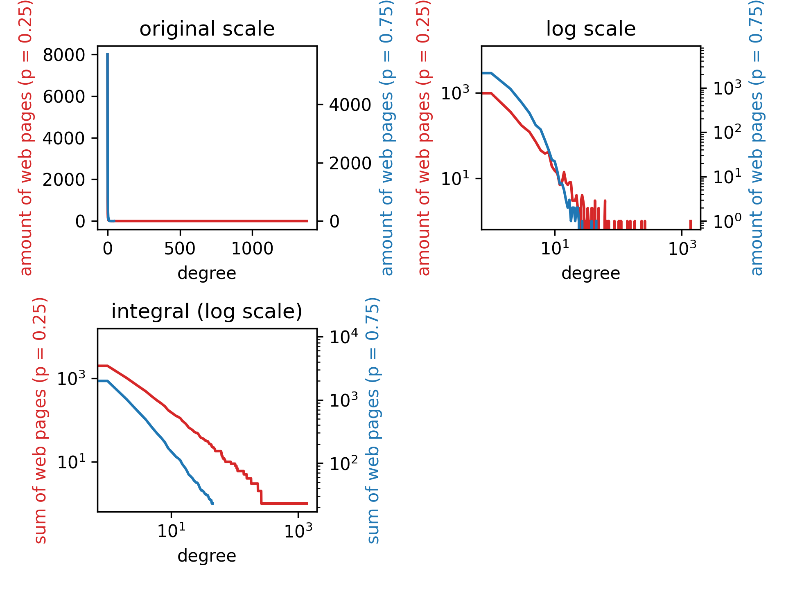

<< 返回本书主页<< Back to the afterword page
Jan. 2022
不同事物的流行程度存在差别。流行性往往呈现为幂律分布：受关注少的事物远多于受关注多的事物，有同样关注量的事物的数量总和在全体中的占比（
一个例子是文本中的词语出现次数

与正态分布相比，幂律分布是“偏态”的（不平等）。它有如下几个特点：

此外，幂律还是无标度（scale-free）、自相似的（self-similar），
关注程度－数量的幂律分布，经过几步数学变换，就可以变成排位序－关注程度的分布。

排位序－关注程度的分布也呈幂律分布。位次越高的事物，越受欢迎。这一定律由齐普夫首先发现，故被称为齐普夫律（Zipf's law）。他发现，在《尤利西斯》中，把词语按照出现频次
其中
排位序－关注程度的分布让我们发现，生活中某些常常谈及的东西，和学术研究的某些经典成果，也来自幂律分布的性质，例如
以上，我们讨论了流行性问题的现象、性质和规律。而流行性问题的成因或机理是什么呢？一个重要的理论是“富者愈富”：正因为人们喜欢追捧本来就很受欢迎的事物，事物的受欢迎程度才呈幂律分布。

在作业中，我们就要来模拟“富者愈富”的过程，看看最终是否会得到幂律分布的结果。
按照顺序创建一系列网页：
当创建网页
分别取
| 节点入度 | |||||||
|---|---|---|---|---|---|---|---|
| 节点个数 |
本次作业有一个特别要求：尽量不用太大的存储空间。如果我们在每一步创建下一个网页时，都要记住前面所有网页分别链接到了哪个网页，运行到后面总网页数较大时，就会占用很大的存储空间，运行速度会比较慢。
事实上，我们只用在每一步记住不同频数的网页有多少个，列表的长度最多为degreeDictModifier函数。
此外，只存储节点入度－节点个数的信息时，如何实现随机选择一个网页，如何与入度成正比选择一个网页？我用到了random库的choices方法，采用了不同的加权值，实现了两种选择方式。具体可见我代码中的webCreate函数。
首先，定义一个函数degreeDictModifier，用以更新节点入度－节点个数的信息（被存储在“入度字典”degreeDict里）：输入原先的入度字典degreeDict和被选中网页的入度choice，返回更新后的入度字典degreeDict。
xxxxxxxxxx11def degreeDictModifier(degreeDict, choice): 入度为choice的网页数减小
xxxxxxxxxx11 degreeDict[choice] -= 1入度为choice + 1的网页数增加
xxxxxxxxxx61 designated = choice + 12 if designated in degreeDict.keys():3 degreeDict[designated] += 14 else:5 degreeDict[designated] = 16 return degreeDict接着，定义函数webCreate，创建新网页，并将其链接到之前创建的一个网页，调用degreeDictModifier函数，对degreeDict做出更新。
xxxxxxxxxx31def webCreate(degreeDict, p):2 degreeKinds = list(degreeDict.keys()) # 现有网页有的度数一共有这么些种3 degreeCount = list(degreeDict.values()) # 每一元素表示，度数为某一种的网页一共有几个调用random库生成一个
random库的choices方法。对于每一种节点入度，按照这一入度共有多少网页进行加权weights=degreeCount，这样，选择某一入度的网页的概率与这一入度的总网页数成正比，而选择某一个网页的概率是相等的。xxxxxxxxxx51 randNum = random.random()2 if randNum < p:3 randChoiceList = random.choices(degreeKinds, weights=degreeCount, k=1) 4 randChoice = randChoiceList[0]5 degreeDict = degreeDictModifier(degreeDict, randChoice)kind，计算这一入度的网页数cnt和该入度的乘积（cnt * kind），存储在newWeights里，用这一数据给每一入度的网页加权。这样加权后，某一个网页被选中的概率与其入度成正比。xxxxxxxxxx91 else:2 newWeights = []3 for kind, cnt in degreeDict.items():4 newWeights.append(cnt * kind)5 slantedChoiceList = random.choices(degreeKinds, weights=newWeights, k=1)6 slantedChoice = slantedChoiceList[0]7 degreeDict = degreeDictModifier(degreeDict, slantedChoice)8 degreeDict[0] += 19 return degreeDict定义函数webCreateSeries，循环调用webCreate，完成degreeDict输出到结果文件output.csv中，返回作图需要的数据。
xxxxxxxxxx41def webCreateSeries(n, p, outputF):2 print('* * * * * * A new round begins. n = %i, p = %.2f * * * * * *' % (n, p))3 cnt = 04 outputF.write('n = %i p = %.2f\n' % (n, p))循环完成10000个网页的创建，得到最终的degreeDict：
xxxxxxxxxx91 degreeDict = {0:1}2 while True:3 cnt += 14 if cnt >= n:5 break6 if cnt % 100 == 0:7 print('%i pages have been created.' % cnt, end = '\r')8 degreeDict = webCreate(degreeDict, p)9 print()输出最终的degreeDict到output.csv：
xxxxxxxxxx151 degreeList = list(degreeDict.items())2 degreeList.sort(key = lambda x:x[0])3 ## 删除网页数为0的度数，不然csv里一行太长了不好看4 for i in range(degreeList[0][0], degreeList[-1][0] + 1):5 if degreeDict[i] == 0:6 del degreeDict[i]7 degreeKinds = degreeDict.keys() 8 degreeCount = degreeDict.values() 9 outputF.write('degree,')10 for degreeKind in degreeKinds:11 outputF.write('%i,' % degreeKind)12 outputF.write('\namount,')13 for degreeCNT in degreeCount:14 outputF.write('%i,' % degreeCNT)15 outputF.write('\n')整理数据，以方便主程序中作图，返回作图需要的数据xPoints, yPoints。
xxxxxxxxxx161 # 为了画图，补上网页数为0的度数2 degreeList = list(degreeDict.items())3 degreeList.sort(key = lambda x:x[0])4 for i in range(degreeList[0][0], degreeList[-1][0] + 1):5 if i not in degreeDict.keys():6 degreeDict[i] = 0 # for log scale7 elif degreeDict[i] == 0:8 degreeDict[i] == 0 # for log scale9 degreeList = list(degreeDict.items())10 degreeList.sort(key = lambda x:x[0])11 degreeKinds = [degreeList[i][0] for i in range(len(degreeList))]12 degreeCount = [degreeList[i][1] for i in range(len(degreeList))]13 xPoints = np.array(degreeKinds)14 yPoints = np.array(degreeCount)15 print('This round all done.')16 return xPoints, yPoints主程序就比较简单了，直接给定n、p值调用webCreateSeries即可，得到相应的横轴纵轴数据x1, y1和x2, y2。
xxxxxxxxxx101outputF = open('output.csv', 'w')2fig = plt.figure()3ax1 = plt.subplot(2,2,1)4ax3 = plt.subplot(2,2,2)5ax5 = plt.subplot(2,2,3)6# n = 10000, p = 0.257x1, y1 = webCreateSeries(10000, 0.25, outputF)8# n = 10000, p = 0.759x2, y2 = webCreateSeries(10000, 0.75, outputF)10outputF.close()接下来就是作图。先作入度－个数图（ax1和ax2）。该图应当符合幂律分布。
xxxxxxxxxx131## original scale2print('Drawing the picture...')3color1 = 'tab:red'4ax1.set_title('original scale')5ax1.plot(x1,y1,color=color1)6ax1.set_xlabel('degree')7ax1.set_ylabel('amount of web pages (p = 0.25)',color=color1)8ax1.tick_params(axis='y')9ax2 = ax1.twinx() # 把两次的结果画进同一个坐标系10color2 = 'tab:blue'11ax2.plot(x2,y2,color=color2)12ax2.set_ylabel('amount of web pages (p = 0.75)',color=color2)13ax2.tick_params(axis='y')对入度和幂律取双对数作图（ax3和ax4）。该图应当是一条直线。
xxxxxxxxxx131ax3.set_title('log scale')2ax3.plot(x1,y1,color=color1)3ax3.set_xlabel('degree')4ax3.set_ylabel('amount of web pages (p = 0.25)',color=color1)5ax3.tick_params(axis='y')6ax3.set_xscale('log')7ax3.set_yscale('log')8ax4 = ax3.twinx() 9ax4.plot(x2,y2,color=color2)10ax4.set_ylabel('amount of web pages (p = 0.75)',color=color2)11ax4.tick_params(axis='y')12ax4.set_xscale('log')13ax4.set_yscale('log')取双对数作图后，入度较大时，图形呈锯齿状，有的入度恰好存在网页，有的入度不存在网页。为了让图更好看，让网页数
得到入度－大于该入度的总网页数ax5和ax6。分析
xxxxxxxxxx251ax5.set_title('integral (log scale)')2y1_new = np.copy(y1)3for i in range(len(x1)):4 pageSum1 = np.sum(y1[i:])5 y1_new[i] = pageSum16y2_new = np.copy(y2)7for i in range(len(x2)):8 pageSum2 = np.sum(y1[i:])9 y2_new[i] = pageSum210ax5.plot(x1,y1_new,color=color1)11ax5.set_xlabel('degree')12ax5.set_ylabel('sum of web pages (p = 0.25)',color=color1)13ax5.tick_params(axis='y')14ax5.set_xscale('log')15ax5.set_yscale('log')16ax6 = ax5.twinx()17ax6.plot(x2,y2_new,color=color2)18ax6.set_ylabel('sum of web pages (p = 0.75)',color=color2)19ax6.tick_params(axis='y')20ax6.set_xscale('log')21ax6.set_yscale('log')22
23fig.tight_layout()24plt.show()25fig.savefig('output.png', dpi=300)| n = 10000 p = 0.25 | n = 10000 p = 0.25 | n = 10000 p = 0.75 | |||
|---|---|---|---|---|---|
| degree | amount | degree | amount | degree | amount |
| 0 | 8005 | 31 | 1 | 0 | 5714 |
| 1 | 973 | 32 | 1 | 1 | 2136 |
| 2 | 360 | 33 | 2 | 2 | 948 |
| 3 | 172 | 34 | 1 | 3 | 467 |
| 4 | 121 | 36 | 1 | 4 | 269 |
| 5 | 72 | 38 | 2 | 5 | 145 |
| 6 | 45 | 39 | 2 | 6 | 115 |
| 7 | 38 | 41 | 1 | 7 | 66 |
| 8 | 41 | 43 | 3 | 8 | 40 |
| 9 | 19 | 45 | 1 | 9 | 24 |
| 10 | 15 | 47 | 1 | 10 | 22 |
| 11 | 13 | 48 | 1 | 11 | 13 |
| 12 | 7 | 49 | 2 | 12 | 7 |
| 13 | 8 | 61 | 1 | 13 | 7 |
| 14 | 14 | 62 | 3 | 14 | 5 |
| 15 | 8 | 64 | 1 | 15 | 3 |
| 16 | 7 | 65 | 1 | 16 | 2 |
| 17 | 8 | 69 | 1 | 17 | 3 |
| 18 | 8 | 71 | 1 | 18 | 1 |
| 19 | 3 | 87 | 1 | 19 | 2 |
| 20 | 3 | 102 | 1 | 20 | 2 |
| 21 | 3 | 107 | 1 | 21 | 1 |
| 22 | 4 | 111 | 1 | 22 | 2 |
| 23 | 2 | 139 | 1 | 23 | 2 |
| 24 | 2 | 155 | 1 | 24 | 1 |
| 26 | 3 | 182 | 1 | 27 | 1 |
| 27 | 4 | 233 | 1 | 38 | 1 |
| 28 | 3 | 263 | 1 | 45 | 1 |
| 29 | 2 | 1376 | 1 | ||
在我们的算法产生完

接下来分析p值对于这一分布的影响。通过比较